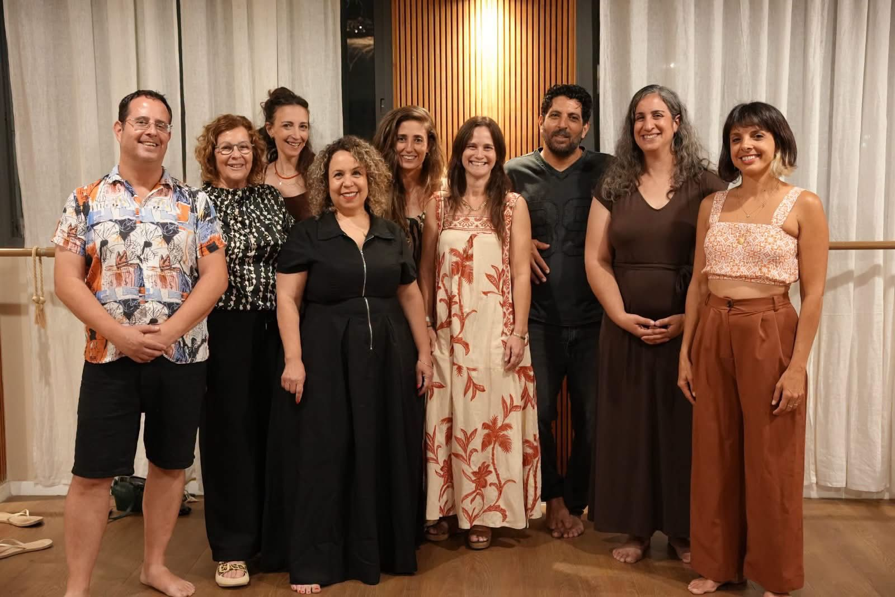

אנסמבל קולי הוא מרחב שכולו חיבור, אלתור, וצלילה לעולם של הרמוניות וקול.
החברות והחברים באנסמבל, אותו אני מובילה יחד עם שותפי יובל לאופר, לומדים גם לפתח את הקול, גם להשתחרר בשירה ובפרפורמנס, ומעבר לזה – לשיר יחד בהרמוניות קוליות, עיבודים מקוריים ומפתיעים שאנחנו עושים לשירים מוכרים.
את העיבודים אנחנו מלמדים בעזרת הקלטות.
מוזמנות ומוזמנים לפנות אלינו לתיאום מפגש ניסיון, ולהוסיף הרמוניה לחיים :)
לפרטים נוספים והרשמה:
 יצירת קשר בווצאפ
יצירת קשר בווצאפ
 יצירת קשר למייל
יצירת קשר למייל